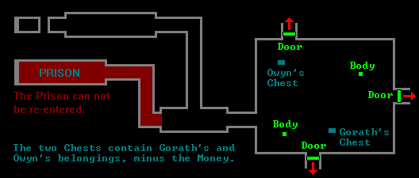
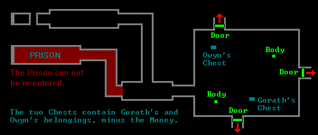

Lower Level/Central Sector
Chapter 4
[DUNGEON MAIN MAP]
 [ZONE 6 MAP]
[ZONE 6 MAP]
 [CHAPTER 4]
[CHAPTER 4]
This is an Image Map. Click Green Caches, or Red Arrows.

[DUNGEON MAIN MAP]
 [ZONE 6 MAP]
[ZONE 6 MAP]
 [CHAPTER 4]
[CHAPTER 4]
This is an Image Map. Click Green Caches, or Red Arrows.

Note: The way out lies through the South Door. The key needed to open
this can only be found in the East Part of the Dungeon. If you can't
open the East Door, you'll need the Guildis Thorn which can be found
in the North Part.
CACHES
 Body (6/8)
Body (6/8)

 Body (6/8)
Body (6/8)

 NORTH DOOR (Locked)
NORTH DOOR (Locked)
 Skill > 10
Skill > 10 EAST DOOR (Locked)
EAST DOOR (Locked)
 Skill > 80 or Guildis Thorn
Skill > 80 or Guildis Thorn SOUTH DOOR (Locked)
SOUTH DOOR (Locked)
 INTERDICTOR KEY
INTERDICTOR KEY